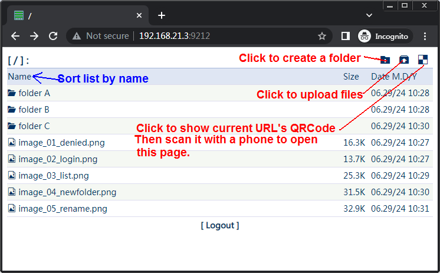
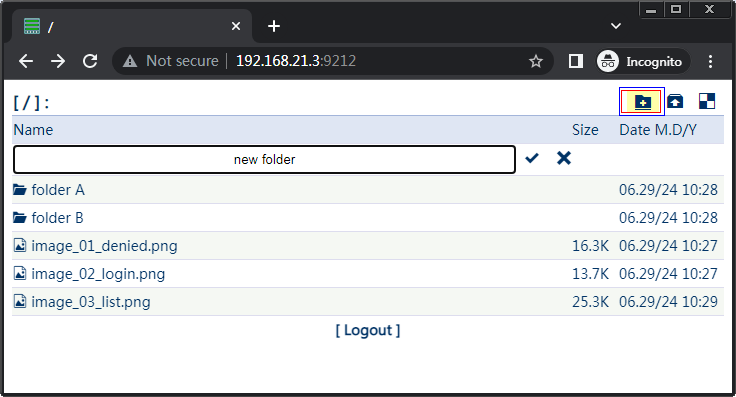
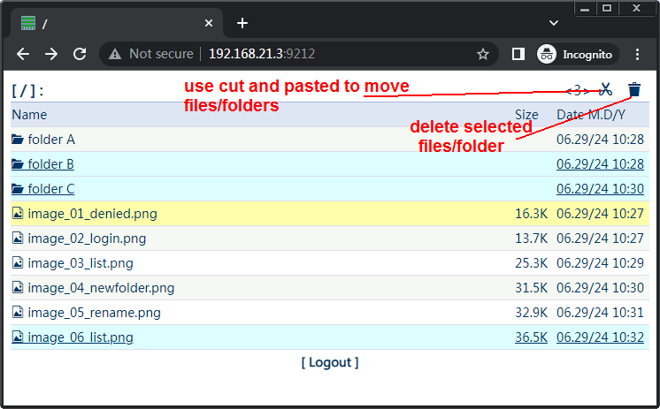
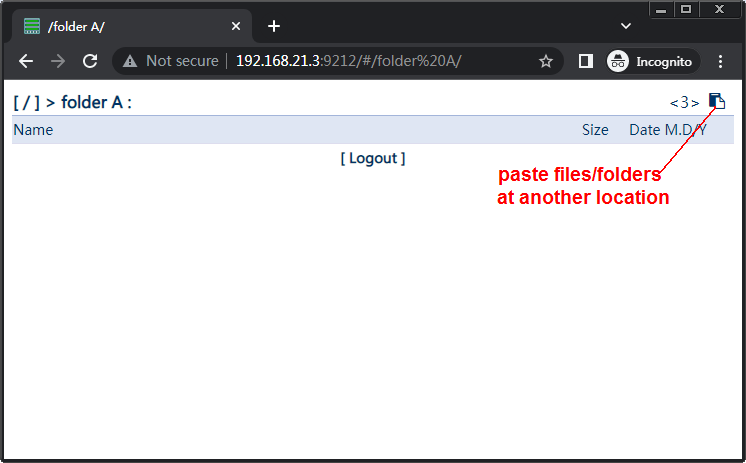

Screenshots and Usage Tips.
- Login.


- File list.

- Create new folder.

- Rename file/folder.
Double-click any blank area of the list to enter rename mode, thus to rename file/folder at the clicked location.

- Select/Choose files/folders.
Click any blank area of the list to select the files/folders, ready for deletion or moving.

After cut:

Paste files/folders at another location:

- Upload files/folders.
- Keep ctrl/shift pressed while click upload button to enter folder upload mode.
- Use "drag & drop" to upload files and/or folders.
- 'Ctrl + C' some files/folders in 'explorer' then 'Ctrl + V' in webd to upload.
- Take a screenshot by PrtSc or Alt + PrtSc then use 'Ctrl + V' to upload it.
The latter two methods may only apply to newer versions of Chrome.